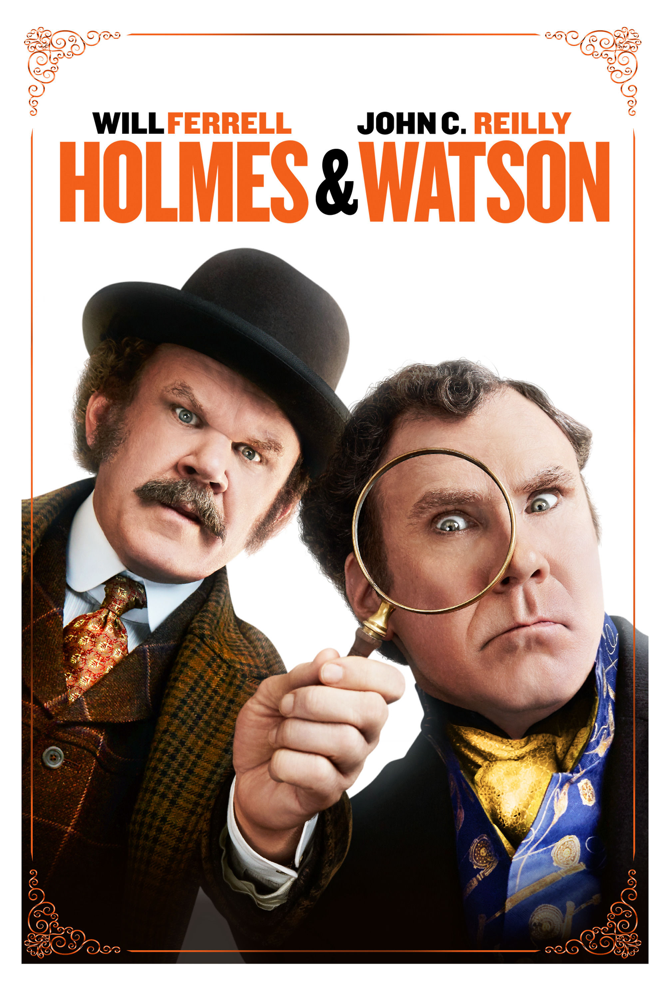
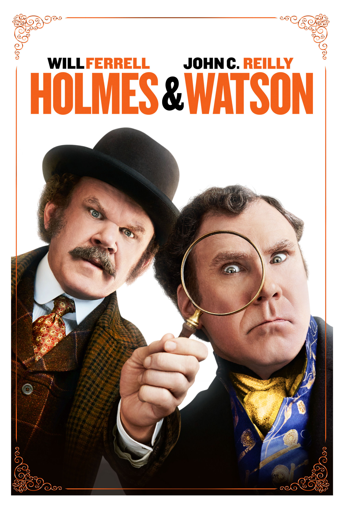

B.
I
II

זאת פסקה לדוגמא בעברית.
To Sherlock Holmes she is always the woman. I have seldom heard him mention her under any other name. In his eyes she eclipses and predominates the whole of her sex. It was not that he felt any emotion akin to love for Irene Adler. All emotions, and that one particularly, were abhorrent to his cold, precise but admirably balanced mind. He was, I take it, the most perfect reasoning and observing machine that the world has seen, but as a lover he would have placed himself in a false position. He never spoke of the softer passions, save with a gibe and a sneer. They were admirable things for the observer—excellent for drawing the veil from men’s motives and actions. But for the trained reasoner to admit such intrusions into his own delicate and finely adjusted temperament was to introduce a distracting factor which might throw a doubt upon all his mental results. Grit in a sensitive instrument, or a crack in one of his own high-power lenses, would not be more disturbing than a strong emotion in a nature such as his. And yet there was but one woman to him, and that woman was the late Irene Adler, of dubious and questionable memory.
I had seen little of Holmes lately. My marriage had drifted us away from each other. My own complete happiness, and the home-centred interests which rise up around the man who first finds himself master of his own establishment, were sufficient to absorb all my attention, while Holmes, who loathed every form of society with his whole Bohemian soul, remained in our lodgings in Baker Street, buried among his old books, and alternating from week to week between cocaine and ambition, the drowsiness of the drug, and the fierce energy of his own keen nature. He was still, as ever, deeply attracted by the study of crime, and occupied his immense faculties and extraordinary powers of observation in following out those clues, and clearing up those mysteries which had been abandoned as hopeless by the official police. From time to time I heard some vague account of his doings: of his summons to Odessa in the case of the Trepoff murder, of his clearing up of the singular tragedy of the Atkinson brothers at Trincomalee, and finally of the mission which he had accomplished so delicately and successfully for the reigning family of Holland. Beyond these signs of his activity, however, which I merely shared with all the readers of the daily press, I knew little of my former friend and companion.
At three o’clock precisely I was at Baker Street, but Holmes had not yet returned. The landlady informed me that he had left the house shortly after eight o’clock in the morning. I sat down beside the fire, however, with the intention of awaiting him, however long he might be. I was already deeply interested in his inquiry, for, though it was surrounded by none of the grim and strange features which were associated with the two crimes which I have already recorded, still, the nature of the case and the exalted station of his client gave it a character of its own. Indeed, apart from the nature of the investigation which my friend had on hand, there was something in his masterly grasp of a situation, and his keen, incisive reasoning, which made it a pleasure to me to study his system of work, and to follow the quick, subtle methods by which he disentangled the most inextricable mysteries. So accustomed was I to his invariable success that the very possibility of his failing had ceased to enter into my head.
It was close upon four before the door opened, and a drunken-looking groom, ill-kempt and side-whiskered, with an inflamed face and disreputable clothes, walked into the room. Accustomed as I was to my friend’s amazing powers in the use of disguises, I had to look three times before I was certain that it was indeed he. With a nod he vanished into the bedroom, whence he emerged in five minutes tweed-suited and respectable, as of old. Putting his hands into his pockets, he stretched out his legs in front of the fire and laughed heartily for some minutes.
“Well, really!” he cried, and then he choked and laughed again until he was obliged to lie back, limp and helpless, in the chair.
“What is it?”
 
